Alcatraz
El cultivo del alcatraz, también conocido como Zantedeschia aethiopica, es una práctica rentable y productiva en diversas regiones, como en Calcahualco, Veracruz. Este cultivo ornamental, originario de África, ha demostrado ser exitoso en áreas como Baja California Sur y Estado de México. En Calcahualco, se ha introducido la variedad 'Deja vu' con resultados favorables en términos de emergencia, sobrevivencia y floración. La rentabilidad del cultivo se evidencia desde el primer año, con una relación beneficio/costo positiva y un punto de equilibrio alcanzado con un número específico de tallos florales. Sin embargo, es importante considerar las condiciones climáticas y de suelo para garantizar el éxito del cultivo.
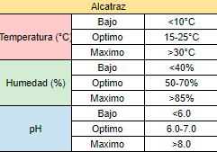
Azucena
Las azucenas prefieren suelos bien drenados, ricos en materia orgánica y ligeramente ácidos con un pH entre 6.0 y 6.5. Antes de plantar, incorpora abono orgánico o compost al suelo. Necesitan ubicarse en un lugar soleado o con semi-sombra, protegidas del viento fuerte. Planta los bulbos en otoño a una profundidad de 15-20 cm y separados entre 30-45 cm. Durante el crecimiento, mantén el suelo ligeramente húmedo pero nunca encharcado, regando regularmente. Aplica un fertilizante balanceado cada 4-6 semanas para promover un crecimiento vigoroso y una floración abundante. Después de la floración, deja que las hojas se sequen por completo antes de cortarlas.
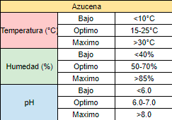
Bugambilia
Las bugamvilias son arbustos tropicales que requieren pleno sol, al menos 6 horas de luz solar directa al día. Prefieren suelos bien drenados, ligeramente alcalinos con un pH entre 6.5 y 7.5. Incorpora abono orgánico o compost al suelo antes de plantar. Puedes plantar bugamvilias a partir de esquejes enraizados en primavera u otoño. Ubícalas en un lugar protegido de los vientos fríos. Riégalas regularmente, manteniendo el suelo ligeramente húmedo, pero permitiendo que se seque un poco entre riegos. Son plantas resistentes a la sequía una vez establecidas. Aplica un fertilizante balanceado cada 4-6 semanas durante la temporada de crecimiento. Realiza una poda de formación cuando sean jóvenes para promover un crecimiento compacto.

Caléndula
La caléndula es una planta anual que prospera en climas cálidos y lugares soleados. Prefiere suelos bien drenados, fértiles y ligeramente alcalinos con un pH entre 6.5 y 7.0. Antes de sembrar, incorpora abono orgánico o compost al suelo. Siembra las semillas directamente al suelo después de la última helada, a una profundidad de 0.5 cm y separadas 20-30 cm entre sí. Mantén el suelo ligeramente húmedo hasta que germinen las semillas. Una vez establecidas, reduce el riego pero no permitas que el suelo se seque completamente. Aplica un fertilizante balanceado cada 4-6 semanas para promover un crecimiento vigoroso y abundante floración. Retira las flores marchitas regularmente para estimular más floración. Para obtener flores continuamente, realiza siembras sucesivas cada 2-3 semanas.
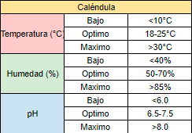
Clavel
Las recomendaciones para el cultivo del clavel incluyen preferir suelos ligeramente alcalinos y bien drenados, exponerlos a 4-5 horas de sol al día, evitar el exceso de riego para prevenir enfermedades, mantener temperaturas entre 50-59°F durante el día y 41-46°F durante la noche, y agregar turba o abono al suelo. Es importante no excederse con el fertilizante nitrogenado para evitar daños en la planta. Además, se aconseja no acolchar la tierra para permitir una adecuada circulación del aire alrededor de los tallos. Estas recomendaciones contribuyen a un cultivo exitoso de claveles, asegurando su desarrollo y floración óptimos.
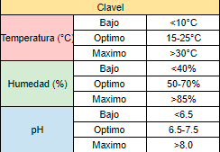
Crisantemo
El crisantemo requiere climas templados a frescos, con temperaturas entre 15-25°C durante el día y 10-15°C en la noche. Prefiere suelos bien drenados, ricos en materia orgánica, con un pH entre 6-7.5. Se propaga mediante esquejes, injertos o división de matas. La plantación se realiza en eras o camas elevadas, dejando 20-40 cm entre plantas y 60-90 cm entre hileras. Necesita riego moderado y constante, evitando encharcamientos. La fertilización debe ser balanceada con nitrógeno, fósforo, potasio y aplicaciones foliares de calcio y magnesio. Un buen manejo de poda de formación, eliminación de brotes laterales, control de malezas y protección contra plagas como los áfidos, trips, arañita roja y enfermedades como el mildiu velloso son fundamentales.
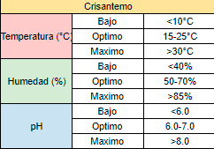
Cucharilla
La cucharilla es una planta perenne que se adapta bien a diferentes tipos de suelos, prefiriendo los bien drenados, fértiles y ligeramente ácidos con un pH entre 6.0 y 7.0. Antes de plantar, incorpora abono orgánico o compost al suelo. Puede crecer tanto a pleno sol como en semi-sombra. Planta los rizomas o divisiones de la planta en primavera u otoño, separados entre 30-45 cm. Mantén el suelo ligeramente húmedo mediante riego regular, evitando el encharcamiento. Aplica un fertilizante balanceado cada 4-6 semanas durante la temporada de crecimiento para promover un desarrollo vigoroso. La cucharilla se propaga fácilmente por sí sola, por lo que no necesita mucha atención adicional. Puedes dividir y trasplantar los rizomas cada 3-4 años para rejuvenecer la planta.
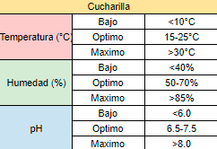
Dalia
Las dalias requieren suelos bien drenados, ricos en materia orgánica y con un pH ligeramente ácido de 6.0 a 6.5. Antes de plantar, incorpora abono orgánico o compost al suelo. Necesitan ubicarse en un lugar soleado con al menos 6 horas de luz solar directa al día. Puedes plantar tubérculos en primavera después de la última helada, a 20 cm de profundidad y 60 cm de distancia entre sí, o esquejes en verano. Mantén el suelo húmedo pero nunca encharcado con un riego regular, especialmente en periodos cálidos y secos. Aplica un fertilizante balanceado rico en fósforo cada 4-6 semanas durante el crecimiento para promover una mejor floración. Algunas variedades altas pueden necesitar tutores o estacas para mantenerse erguidas.
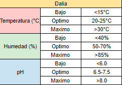
Flor de Mayo
La flor de mayo es un arbusto que prefiere suelos bien drenados, ricos en materia orgánica y ligeramente ácidos con un pH entre 6.0 y 6.5. Necesita ubicarse en un lugar con pleno sol o semi-sombra. Antes de plantar, incorpora abono orgánico o compost al suelo. Puedes plantar la flor de mayo a partir de esquejes enraizados en primavera u otoño. Riégala regularmente, manteniendo el suelo húmedo pero nunca encharcado. Una vez establecida, es tolerante a la sequía. Aplica un fertilizante de liberación lenta al inicio de la temporada de crecimiento. Realiza una poda de formación cuando sea joven para promover un crecimiento compacto. Haz podas de mantenimiento después de las floraciones para estimular nuevas flores y controlar su tamaño.


Flor de muerto
La flor de muerto o cempasúchil es una planta anual que requiere pleno sol y suelos bien drenados, ligeramente alcalinos con un pH entre 6.5 y 7.5. Antes de plantar, incorpora abono orgánico o compost al suelo. Siembra las semillas directamente en el suelo después de la última helada, a 1 cm de profundidad y separadas 30 cm entre sí. Mantén el suelo ligeramente húmedo durante la germinación y el crecimiento inicial. Una vez establecidas, reduce el riego pero no permitas que el suelo se seque por completo. Aplica un fertilizante balanceado cada 4-6 semanas para promover un crecimiento vigoroso y abundante floración. Las flores de muerto no requieren poda, pero puedes retirar las flores marchitas para estimular más floración. Si planeas cosechar las flores secas, deja que las cabezas florales se sequen en la planta.


Girasol
Los girasoles necesitan un suelo bien drenado, fértil y con exposición plena al sol. Se desarrollan mejor en suelos ligeramente alcalinos con un pH entre 6.0 y 7.5. Antes de plantar, incorpora abono orgánico o compost al suelo. Siembra las semillas directamente al suelo después de la última helada, a 2-3 cm de profundidad y a 45-60 cm de distancia entre plantas. Mantén el suelo húmedo pero no encharcado mediante riego regular, especialmente durante la floración. Aplica un fertilizante balanceado cada 4-6 semanas para promover un crecimiento y floración óptimos. Los girasoles son plantas altas, así que proporciona estacas o tutores en caso de vientos fuertes. Después de la floración, puedes dejar que las flores se sequen en la planta para cosechar las semillas.
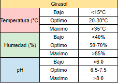
Gladiolo
Las recomendaciones para el cultivo del gladiolo incluyen preferir terrenos arenosos con buen drenaje, aportar capas de paja en suelos pesados con arcilla, realizar la plantación en suelos húmedos, humedecer la tierra días antes de plantar los bulbos, y proporcionar fertilizantes según las condiciones climáticas y de suelo. Además, se aconseja plantar los cormos a una temperatura específica para obtener una floración óptima, realizar plantaciones mensuales durante tres años para un cultivo didáctico, y controlar enfermedades fungosas como Fusarium oxysporum f. sp. Gladioli con productos adecuados. Estas recomendaciones contribuyen a un cultivo exitoso de gladiolos, asegurando su desarrollo y floración adecuados.

Nardo
El nardo es una planta perenne bulbosa que prefiere suelos bien drenados, ricos en materia orgánica y ligeramente alcalinos con un pH entre 6.5 y 7.5. Antes de plantar, incorpora abono orgánico o compost al suelo. Necesita ubicarse en un lugar con pleno sol o semi-sombra. Planta los bulbos en otoño a una profundidad de 10-15 cm y separados entre 15-20 cm. Durante la temporada de crecimiento, mantén el suelo moderadamente húmedo mediante riego regular, evitando el encharcamiento. Aplica un fertilizante rico en potasio cada 4-6 semanas para promover una mejor floración. Después de la floración, deja que las hojas se sequen por completo antes de cortarlas. Los bulbos deben permanecer en el suelo y entrar en reposo en verano. Protégelos del frío extremo con una capa de mantillo durante el invierno.
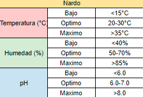
Nochebuena
Las nochebuenas prefieren temperaturas cálidas entre 16-24°C y requieren pleno sol o semi-sombra. Necesitan un suelo bien drenado, ligeramente ácido a neutro con un pH entre 6.0-7.0. Antes de plantar, incorpora abono orgánico o compost al suelo. Puedes cultivarlas a partir de esquejes o comprar plantas pequeñas. Plántalas a principios de primavera, manteniéndolas en interiores hasta que pasen los últimos fríos. Riégalas regularmente, permitiendo que el suelo se seque ligeramente entre riegos. Aplica un fertilizante líquido balanceado cada 2 semanas durante el crecimiento activo. Hacia finales de verano, reduce gradualmente el riego para inducir el desarrollo de las flores rojas características. Brinda períodos de oscuridad de al menos 14 horas seguidas por 6-8 semanas para promover la floración.
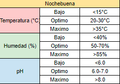
Nube
Conocida botánicamente como Gypsophila, incluyen sembrar directamente en primavera después de la amenaza de heladas en suelos ligeramente alcalinos con buen drenaje y humedad media, en zonas de resistencia con sol fuerte, o iniciar en interiores de 6 a 8 semanas antes de la última helada para trasplantarla, siendo una planta perenne cultivada de forma ornamental en jardines y comúnmente utilizada como follaje.
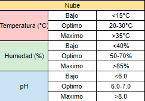
Rosa
Selecciona variedades adecuadas para tu clima, evitando sombra y ubicándolas en lugares aireados; si tienes una rosa en maceta, espera a que esté floreciendo para trasplantarla al jardín, haciendo un hoyo de al menos 40x40 cm y mezclando la tierra con compost, usando un sustrato con buen drenaje y plantando a una profundidad adecuada, compactando la tierra y regando abundantemente hasta inundar el alcorque; riega con frecuencia, evitando mojar el follaje, usando un sistema de riego localizado y abonando con fertilizantes de liberación lenta o líquidos, siguiendo las indicaciones del fabricante, en primavera cada 15 días y en verano mensual; poda en invierno cuando la planta está en reposo, cortando los tallos viejos dejando 3-4 nuevos de 40 cm en Híbridas de Té y Grandifloras, mientras que las Silvestres, Antiguas y Trepadoras requieren menos poda.
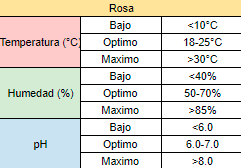
Terciopelo
Se recomienda sembrar las semillas en primavera después de las últimas heladas en un sustrato bien drenado y ligeramente ácido, trasplantar las plántulas a una distancia de 30-45 cm cuando tengan 10-15 cm de altura a un lugar con sol directo durante al menos 6 horas al día, mantener el suelo húmedo pero no encharcado, regar cuando la superficie se seque, abonar cada 2-3 semanas con un fertilizante balanceado para estimular el crecimiento y la floración, podar las flores marchitas para prolongar la floración, siendo una planta anual originaria de Sudamérica que se adapta bien a climas cálidos y soleados, utilizada en jardinería, macetas y arreglos florales.
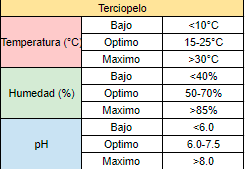